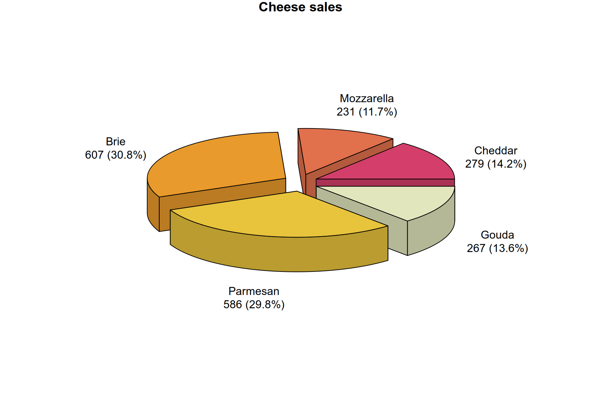

Cheese Sales Analysis
3D Pie Charts with plotrix
This post demonstrates how to create an attractive 3D pie chart in R using the plotrix package. While pie charts are often debated in data visualization circles, they can be highly effective for displaying market share or proportional breakdowns when stylized well.
Data Preparation
First, we will load the necessary libraries and create a sample dataset of cheese sales. We use dplyr to elegantly calculate the percentage share (market share) of each cheese type relative to total sales.
library(plotrix)
library(dplyr)
# Constructing a sample dataset of cheese sales
df <- tibble(
NM = c("Cheddar", "Mozzarella", "Brie", "Parmesan", "Gouda"),
SUM = c(279158, 231399, 606614, 586469, 267434)
) %>%
# Calculating the percentage share for each category
mutate(
PROC = round((SUM / sum(SUM)) * 100, 1) %>% paste0('%')
)Creating the 3D Pie Chart
The plotrix library provides the pie3D function, which allows for extensive customization. In this example, we manipulate the margins, apply a built-in heat color palette, and format the labels to include both the proportional share and the absolute sales numbers (in thousands).
# Generating a stylized 3D pie chart
pie3D(
df$SUM,
mar = rep(1, 4), # Adjusted margins to fit labels
col = hcl.colors(length(df$NM), "Heat 2"), # Applying a warm color palette
labels = paste0(df$NM, '\n', round(df$SUM / 1000), 'k (', df$PROC, ')'),
main = "Cheese Sales Distribution",
height = 0.1, # Thickness of the 3D pie
radius = 0.8, # Overall radius
labelcex = 1, # Label size scaling factor
explode = 0.1 # Spacing between the pie slices
)Result
The resulting visualization cleanly separates the categories and provides an immediate understanding of the sales distribution among the different cheese varieties.
